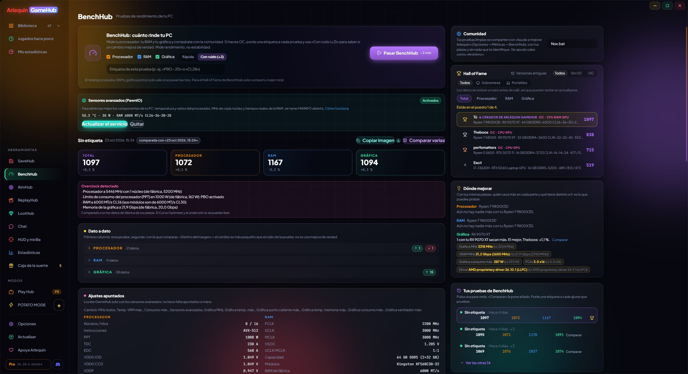

BenchHub: quanto rende davvero il tuo PC
Test di processore, RAM e scheda video, e una Hall of Fame per confrontarti con la community.
BenchHub mette alla prova a fondo il tuo processore (ogni core, tutti i core e la latenza tra core), la tua RAM (velocità, latenza e le sue curve) e la tua scheda video (la stessa scena 3D per tutte, a 1080p, 1440p e 4K, più PCIe e Resizable BAR), e ti dice se qualcosa li frena: calore, limite di consumo, RAM senza XMP/EXPO o la scheda video in uno slot lento. Se fai overclock, dai un’etichetta a ogni test: annota da solo le impostazioni del BIOS, ti dice se un cambiamento aiuta davvero o resta nel margine, confronta fino a 4 test insieme e ti mostra dove migliorare rispetto a chi ha i tuoi stessi componenti.
I test puliti che condividi compaiono nella Hall of Fame, con il nickname che scegli o come «Anonimo».
Rileva se processore, RAM o scheda video sono in overclock (con la sua etichetta e il suo filtro nella Hall of Fame), ti dice quale PC fa 1000 punti (quello di riferimento, di fabbrica) e ti dà un’immagine del tuo risultato da condividere.
Come si usa
- Strumenti → BenchHub.
- Chiudi prima giochi e programmi pesanti: GameHub si fa da parte mentre misura.
- Per comparire nella Hall of Fame: Opzioni → Privacy e dati → BenchHub.

Lo provi?
⬇ Download diretto 🛍️ Scarica dal Microsoft StoreWindows 10 e 11 (64 bit) · Gratis · Si aggiorna da solo